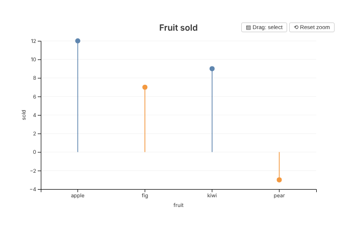

This guide adds a new mark type to glyph, from the R function to the
drawing code in the browser. The example is a lollipop mark: a stem from
zero to each value, with a dot at the end. glyph doesn’t have one yet,
so you can follow along and end up with a working
mark_lollipop().

Be clear about one thing before you start. Adding a mark means editing glyph’s own source code. There is no way yet to add a mark from another package or from a script. The last section explains why, and what would have to change.
You need a copy of the glyph source, and R with devtools. To try the browser tests at the end, you also need chromote and Chrome.
How a mark gets from R to the screen
A mark passes through five places on its way to the screen:
- A function such as
mark_point()adds a mark to the spec. The spec is a plain R list. -
compile()resolves the mark’s mappings against the data and turns the spec into JSON. - htmlwidgets sends the JSON to the browser with the plot.
-
inflateSpec()ininst/htmlwidgets/glyph.jsturns the data back into one object per row. -
drawMark()in the same file calls the drawing function for the mark’s type.
Steps 2 to 4 are the same for every mark. A new mark needs code in steps 1 and 5, plus a few hooks for axes and interactions.
Step 1: the R function
Every mark function is a thin wrapper around add_mark()
in R/marks.R. Add mark_lollipop() to that
file, next to the other marks:
#' Add a lollipop mark
#'
#' Draws a stem from zero to each value, with a dot at the end.
#' @inheritParams mark_point
#' @return Modified \code{glyph_spec} object with the lollipop mark added
#' @export
#'
#' @examples
#' df <- data.frame(fruit = c("apple", "fig", "kiwi"), sold = c(12, 7, 9))
#' glyph(df, x = fruit, y = sold) |> mark_lollipop()
mark_lollipop <- function(spec, ..., data = NULL, style = list()) {
add_mark(spec, "lollipop", rlang::enquos(...), data, style,
defaults = list(size = 5, stroke_width = 1.5, opacity = 0.9))
}add_mark() takes:
-
type: the name the browser uses to pick the drawing function. Here it is"lollipop". -
quos: the mappings passed in..., such ascolor = shop. They are captured, not evaluated, so they can refer to columns. -
data: an optional data frame just for this mark. -
style: fixed visual properties set by the user. They are merged overdefaults, sostyle = list(size = 8)overrides the default dot size. -
stat: for marks that summarise data. See “Marks that summarise data” below.
Run devtools::document() to add the help page and the
export to NAMESPACE. Then add mark_lollipop to
the “Marks” section of _pkgdown.yml so the reference page
lists it.
The mark is now stored in the spec like any other. You can see the same structure for an existing mark:
sales <- data.frame(
fruit = c("apple", "fig", "kiwi", "pear"),
sold = c(12, 7, 9, -3)
)
p <- glyph(sales, x = fruit, y = sold * 2) |> mark_point()
str(p$marks[[1]][c("type", "style", "id", "stat")])
#> List of 4
#> $ type : chr "point"
#> $ style:List of 2
#> ..$ size : num 5
#> ..$ opacity: num 0.8
#> $ id : chr "point_1"
#> $ stat : NULLEach mark gets an id from its type and position, such as
point_1. The id is used to name computed columns, as the
next step shows.
Step 2: what compile() does with the mark
compile() handles mappings the same way for every mark,
so a new mark gets this for free. In resolve_mark() in
R/render.R:
- A mapping to a column, such as
x = fruit, is kept as a field name. - A computed mapping, such as
y = sold * 2, is evaluated against the data and stored in a new column called.g_<id>_<aesthetic>. The expression text becomes the axis label. - Each mapping gets a type:
"quantitative","nominal"or"temporal". The browser uses it to pick a scale. - Rows with a missing value in a position mapping (
x,y,x2,y2,y_minory_max) are dropped, with a warning.
The result is the mark’s encoding:
compiled <- compile(p)
str(compiled$spec$marks[[1]]$encoding)
#> List of 2
#> $ x:List of 3
#> ..$ field: chr "fruit"
#> ..$ type : chr "nominal"
#> ..$ label: chr "fruit"
#> $ y:List of 3
#> ..$ field: chr ".g_point_1_y"
#> ..$ type : chr "quantitative"
#> ..$ label: chr "sold * 2"Your drawing code reads values through these fields. It never needs to know whether a mapping was a plain column or an expression.
Step 3: how data reaches the browser
Plot data is sent as columns, not rows. This makes
compile() fast on large data. The plot’s own data looks
like this:
str(compiled$spec$data)
#> List of 2
#> $ columns:List of 3
#> ..$ fruit : chr [1:4] "apple" "fig" "kiwi" "pear"
#> ..$ sold : num [1:4] 12 7 9 -3
#> ..$ .g_point_1_y: num [1:4] 24 14 18 -6
#> $ n : int 4A mark that draws the plot’s data doesn’t carry a copy. It names the columns it uses and, if any rows were dropped for missing values, which rows it keeps:
str(compiled$spec$marks[[1]]$data)
#> List of 3
#> $ from : chr "plot"
#> $ fields: 'AsIs' chr [1:3] "fruit" "sold" ".g_point_1_y"
#> $ rows : NULLA mark with its own data sends its own columns instead.
A statistical mark sends its summaries as values, one
record per box or bin.
You don’t have to deal with any of this. Before anything is drawn,
inflateSpec() in glyph.js turns every mark’s
data back into an array of row objects. So your drawing function gets
data as rows like
{fruit: "apple", sold: 12, ".g_point_1_y": 24}, with
exactly the rows it should draw.
Step 4: the drawing code
The browser side lives in inst/htmlwidgets/glyph.js.
First add a case to the switch in
drawMark():
case "lollipop":
drawLollipop(g, data, enc, scales, style, w, h, interact, theme, markRegistry);
break;Then add the drawing function. A good place is next to
drawBars():
// A stem from zero to each value, with a dot at the end. Each lollipop is
// one <g>, so tooltips, hover, brushing and selection all act on the stem
// and the dot together.
function drawLollipop(g, data, enc, scales, style, w, h, interact, theme, markRegistry) {
const baseOpacity = style.opacity ?? 0.9;
const r = style.size || 5;
const slotWidth = groupSlotWidth(scales, enc, 40);
const px = d => xPos(scales, enc, d, slotWidth);
const py = d => yPos(scales, enc, d);
// Stems start at zero, or at the edge of the plot when a domain set with
// set_scale() leaves zero outside it.
const base = scales.y ? Math.max(0, Math.min(h, scales.y(0))) : h;
const colour = d => scales.color ? scales.color(getVal(d, enc.color)) : (theme.accent || "#4269d0");
const pops = g.append("g").attr("class", "marks-lollipop")
.selectAll("g")
.data(data)
.join("g")
.attr("class", "glyph-lollipop")
.attr("opacity", baseOpacity);
pops.append("line")
.attr("x1", px).attr("x2", px)
.attr("y1", base).attr("y2", py)
.attr("stroke", colour)
.attr("stroke-width", style.stroke_width || 1.5);
pops.append("circle")
.attr("cx", px).attr("cy", py)
.attr("r", r)
.attr("fill", colour);
// Brushing selects a lollipop when its dot is inside the brushed area.
const finder = pointFinder(pops, px, py);
registerMark(markRegistry, pops, baseOpacity, {
brush: {
rowLevel: true,
nearest: (mx, my, tolerance) => finder.nearest(mx, my, tolerance),
hit: (d, i, node, [[x0, y0], [x1, y1]]) => {
const x = px(d), y = py(d);
return x >= x0 && x <= x1 && y >= y0 && y <= y1;
},
opacity: hit => hit ? 1 : 0.15
}
});
if (interact.tooltip?.enabled) addTooltip(pops, data, enc, interact.tooltip, theme);
if (interact.hover?.enabled) {
pops
.on("mouseover.hover", function() { d3.select(this).select("circle").attr("r", r * 1.6); })
.on("mouseout.hover", function() { d3.select(this).select("circle").attr("r", r); });
}
if (interact.click?.enabled) addClickSelect(pops, interact.click.action, baseOpacity, markRegistry);
}The arguments are the same for every drawing function:
-
gis the plot area, an SVG group. Draw inside it. Its origin is the top-left corner of the plotting area, inside the axes. -
datais the array of rows from step 3. -
encis the encoding from step 2. Read a value withgetVal(d, enc.y), notd.y, because the field name may be generated. -
scalesholds the plot’s scales:scales.x,scales.y, andscales.colororscales.sizewhen those are mapped. They are shared with every other mark on the plot. -
styleis the mergedstylelist from the R function. -
wandhare the width and height of the plotting area in pixels. -
interactis what the user set withinteract(). -
themeholds the theme tokens, such astheme.accentandtheme.fg. -
markRegistryis where the mark registers itself for brushing and selections (step 6).
xPos() places a value on the x scale. On a categorical
scale it puts it in the middle of its band, which is what most marks
want. yPos() does the same for y.
Wrap each element in a class of its own, such as
marks-lollipop and glyph-lollipop. That gives
tests and stylesheets something to find.
Step 5: the axes
The x and y scales cover every mark’s values.
markExtent() in glyph.js reports the range
each mark draws along an axis. For plain mappings it uses the mapped
column, which is enough for most marks.
A lollipop measures from zero, like a bar, so its value axis should
include zero. Add "lollipop" to the rule that does this for
bars and areas:
if (axis === "y" && (mark.type === "bar" || mark.type === "area" || mark.type === "lollipop")) vals.push(0);If your mark draws something other than its mapped values, such as a
whisker or a bin edge, add a branch to markExtent() that
pushes those values instead. The statistical marks do this. Without it,
part of the mark can be drawn outside the axes.
Step 6: tooltips, hover, brush and click
Interactions are where most of the work in a new mark goes. glyph has helpers for each of them.
Tooltips.
addTooltip(selection, data, enc, interact.tooltip, theme)
shows the mapped fields when the pointer is over an element, and on tap
on touch screens. It uses the widget’s one shared tooltip. Don’t create
your own tooltip elements: each redraw would leave another one
behind.
Hover. The built-in addHoverEffect() changes the radius
or outline of the element itself. A lollipop is a group, so the example
writes its own small handler that enlarges the dot inside the group.
Brushing. When brushing is on, an overlay covers the plot so a drag
can start anywhere. The overlay also takes the pointer events the marks
would get. glyph forwards them to the element under the pointer, but
only for marks registered with registerMark(). The
brush part of the registration says:
-
rowLevel:truewhen each element draws one row, as here. Statistical marks set it tofalse. -
nearest: the element at a point.pointFinder()does this quickly for marks that sit at a single point. -
hit: whether the brushed rectangle selects an element. -
opacity: the opacity of selected and unselected elements while a selection exists.
Forwarded events are sent to the element that nearest
returns. Attach every listener (tooltip, hover, click) to that same
element. A listener on a child, such as the circle inside a lollipop’s
group, would never see them.
Registering the mark also connects it to linked selections in
compose(), to legend selections, to the “Clear selection”
button and to the Escape key. These all change the opacity of the
registered elements, so put the opacity on the group, not on its
children.
Click. addClickSelect() handles
interact(click = ...) and selection from linked panels.
Step 7: fitting the container
Plots are drawn at the size of the container they are in, and redrawn when it changes size (#17). Fitting a plot can take up to three draws, and every resize redraws the whole plot. Your drawing function will run many times. Three rules keep it working:
- Size everything from
w,hand the scales. Never read the spec’swidthorheight. They are only a fallback for a container that has no size yet. - Keep no state between draws. Each draw starts with an empty plot area.
- Don’t add listeners to
documentorwindowdirectly. If you need one, useonDocumentTap(), which removes listeners left by earlier draws.
Facets, compose() and inset() call the same
drawing function once per panel, each with its own g,
w, h and scales. A mark that follows these
rules works in all of them without extra code. Zoom also works without
extra code, because it transforms the whole plot area.
Step 8: tests
Add tests in tests/testthat/test-lollipop.R. An R test
checks what compile() produces:
sales <- data.frame(fruit = c("apple", "fig", "kiwi", "pear"), sold = c(12, 7, 9, -3))
test_that("mark_lollipop() adds a lollipop layer", {
spec <- glyph(sales, x = fruit, y = sold) |> mark_lollipop()
mark <- spec$marks[[1]]
expect_equal(mark$type, "lollipop")
expect_equal(mark$style$size, 5)
compiled <- compile(spec)$spec$marks[[1]]
expect_equal(compiled$encoding$y$field, "sold")
expect_equal(compiled$encoding$x$type, "nominal")
})A browser test checks what was drawn. The helpers in
tests/testthat/helper-browser.R open the plot in headless
Chrome through chromote. axisMap() converts drawn positions
back to data values through the axis ticks, so the test compares the
drawing with the data, not with glyph’s own calculations:
test_that("lollipops are drawn from zero to their value", {
skip_if_no_browser()
s <- open_page(save_page(
glyph(sales, x = fruit, y = sold) |> mark_lollipop() |> interact(tooltip = TRUE, brush = TRUE)
))
js(s, AXIS_JS)
drawn <- js(s, "(() => { const y = axisMap('y');
return [...document.querySelectorAll('.glyph-lollipop')].map(p => ({
base: y(+p.querySelector('line').getAttribute('y1')),
tip: y(+p.querySelector('line').getAttribute('y2')),
dot: y(+p.querySelector('circle').getAttribute('cy')) })); })()")
expect_length(drawn, 4)
expect_equal(vapply(drawn, `[[`, numeric(1), "base"), rep(0, 4), tolerance = 0.05)
expect_equal(vapply(drawn, `[[`, numeric(1), "tip"), sales$sold, tolerance = 0.05)
expect_equal(vapply(drawn, `[[`, numeric(1), "dot"), sales$sold, tolerance = 0.05)
expect_length(page_errors(s), 0)
})Browser tests skip on CRAN and wherever chromote or Chrome is missing. The browser-tests and R CMD check workflows run them on every pull request.
Then try the mark by hand:
devtools::load_all()
glyph(sales, x = fruit, y = sold) |>
mark_lollipop(color = sold > 0) |>
interact(tooltip = TRUE, hover = "enlarge", brush = TRUE, zoom = TRUE)Hover a dot, brush a few lollipops, clear the selection, zoom and
reset, and resize the window. Add facet() and try it
again.
Marks that summarise data
Some marks draw a summary of the data rather than one element per row, as boxplots and histograms do. glyph computes those summaries in R when the plot is compiled (#6), so the browser only draws what it is sent. To add one:
- Pass
stattoadd_mark(), for examplestat = list(type = "errorbar", level = 0.95). Settings for the statistic go in the same list. - Write a
stat_errorbar()function inR/stats.Rand add it to theswitchincompute_stat(). It gets the mark’s rows after mappings are resolved and missing values dropped. It returns one record per summary element, with the encoding it should be drawn with. - Give each record a
.rowsfield: the 0-based indices of the rows it summarises. Brushing and linked selections use it to connect a summary to the rows behind it. - Group by facet fields as well as by
xandcolor, so each facet panel gets its own summaries. The helpers inR/stats.Rdo this. - In
glyph.js, add amarkExtent()branch for the values the summary draws, and a drawing function as in step 4. Register the elements withaddStatInteractions(), which sets up tooltips, hover, click and a brush that selects by bounding box.
mark_polygon() uses the same route without computing a
statistic. It collects its vertex rows into one record per shape, and
gives the brush its own hit test for the shape. Read
stat_polygon() and drawPolygon() for a
complete, short example.
Limits
Adding a mark means editing four places in glyph itself:
R/marks.R, drawMark() and a drawing function
in glyph.js, markExtent() when the axes need
it, and R/stats.R for a summarising mark. You can’t do it
from another package or from your own script:
-
add_mark()is internal. You could reach it withglyph:::add_mark(), andcompile()would accept the result. But the browser would draw nothing for an unknown type, and give no error. -
drawMark()chooses the drawing function with a fixedswitch. There is no way to register a new type with it. - A plot only loads glyph’s own JavaScript. Another package has no supported way to add a script to the widget.
Extending glyph from outside would need at least:
- an exported R function for creating marks, with the arguments of
add_mark(); - a registry in the browser, such as
glyph.registerMark("lollipop", { draw, extent }), whichdrawMark()andmarkExtent()check before their built-in cases; - a way for another package to attach its JavaScript to the widget,
for example as an htmltools dependency that
render()includes; - a documented, stable set of helpers for drawing functions: scales,
registerMark(),addTooltip(),pointFinder()and the rest.
None of these exist yet.
Some of what this guide relies on is more settled than the rest. Likely to stay:
- the shape of a mark in the R spec:
type,mappings,data,style,idandstat; - the rows a drawing function gets, keyed by the fields in its encoding.
Likely to change:
- the JSON sent to the browser. It changed with #22 and is
marked by its
$schemaversion; - the arguments of the drawing functions, which differ between marks;
- the helpers in
glyph.jsand the shape of the brush registration; - how statistical marks name the fields of their records.
A few features don’t know about new marks:
-
animate(). Its entrance transitions select elements by tag, such as rects for"slide"and circles, rects and paths for"fade". A lollipop’s dots would fade in but its stems wouldn’t. Add your mark’s elements toapplyAnimation()if you want it animated. -
to_vegalite(). It copies the mark type into the Vega-Lite spec, and Vega-Lite has no"lollipop"mark.
Checklist
-
R/marks.R: themark_*()function, documented and exported. -
_pkgdown.yml: the new reference page. -
inst/htmlwidgets/glyph.js: acaseindrawMark(), the drawing function, andmarkExtent()if the axes need it. -
R/stats.R: astat_*()function and a case incompute_stat(), for a mark that summarises data. -
tests/testthat/: an R test and a browser test. -
NEWS.md: an entry for the new mark.